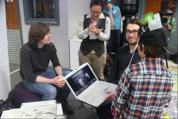
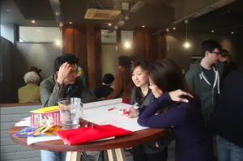
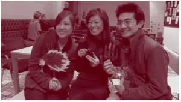
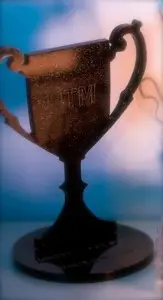
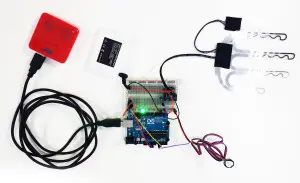

As part of our preparation for Hack Manchester Jnr, we had a kind offer of help from Michelle Hua to tell her story..!
Numbers that Matter Hackathon
When I first heard about hackathons, I was curious and intrigued to find out what they were. All I knew was it is 2 days of challenges in teams and presentations to explain our projects. The criteria set for the hackathon was wearable technology, using open data to promote health and well being.
I had a business idea of developing a heated glove which came out of my own challenges during a 6 hour walking tour in Prague in -21 degrees! My hands and feet were frozen as I navigated the freezing cold but beautiful city of Prague.
My first thought was I don’t have a team!
Hackathons are such a collaborative environment. There are so many people attending who don’t have teams but end up finding people to join teams on the day. I had 2 friends; one was an industrial designer and the other, an engineer who were also curious to learn about hackathons. I contacted the organiser ahead of the event about only having 3 team members. They reassured me that there were people attending hackathons on their own and there are loads of people on the day to help with with technical issues, ideas and general help with needing materials and equipment.
I prepared for the Hackathon
I purchased a few heated gloves to hack into and charged all the batteries to use on the day. I also brought my computer and met up with my team members to discuss what we could create on the day to fit the criteria.
During the hackathon
It was a buzzing environment full of activity, talks, equipment and materials to play with, collaborating with other teams to help them as well as working on our projects. There were so many great ideas and we were so inspired and motivated to complete our projects. We even worked into the evening at home on our presentations and made sure our prototype worked for the presentation. We used Prezi for our presentation to make it as engaging as possible and we were all so proud of our projects that we wanted to take turns to present.

Happy hackathoners photo credit by Mike Nickson

Happy Hands hard at work photo credit by Mike Nickson
Presentations
It was really important to us to take our audience on our journey by starting with the problem of having suffered from cold hands. We researched the market and found a gap that we could fulfill.
We also gave our project a catchy name called “Happy Hands”. This is because warm hands = happy hands = happy people!
We presented the key technical aspects and challenges of our project. We also created a quick video using people from other teams to star in our video .
Everyone was more than happy to lend a helping hand to our “Happy Hands” project.
After the presentations, the judges deliberated and there were such great projects and ideas on the day that it didn’t matter whether or not we won.
We were just so pleased that 2 days before, we had an idea and from that idea, we developed a working prototype having no background in coding or electronics. We had an idea, creative team members and very talented people to help us on the day. We also learnt alot about coding and electronics! Bob from HAC:Man was instrumental in helping us turn our ideas into a reality.
AND WE WON!
We couldn’t believe that we won! We didn’t really know what the prizes were because we were more curious about going and learning about hackathons and meeting new people.

Happy Hands winning team: Ying, Michelle and Eujin
What did we win?

Happy Hands trophy

Happy Hands winning prototype
We won £2500 worth of funding to help me create a prototype further with the help of Lancaster University through the Numbers That Matter Hackathon . It was an amazing prize to receive.
My business is now called Made With Glove and I’m well onto my way to taking my prototype into a real life product!
This blog was written by Michelle Hua, Founder & Director of Made With Glove Ltd, a Manchester based wearable technology company designing fashionable heated gloves for women. Follow Michelle on Twitter @madewithglove or www.madewithglove.co.uk.